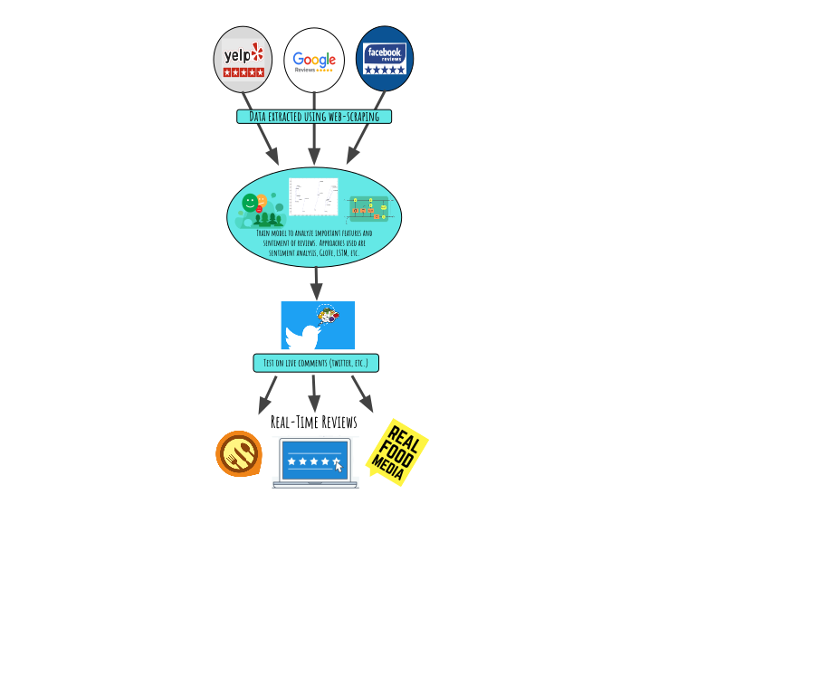

Rithik Gavvala, Rahul Rajan, Saloni Shah, and Aakash Gupte Fall 2020 CS 4641 Class Project Georgia Tech
Project
Using content from active platforms, to provide businesses & the general public with more accurate analytics on a restaurant’s rating.
Summary figure

Background
For our project, we decided to look at the current restaurant rating system- we found out that a restaurant’s rating has a significant impact on its potential revenue. More specifically, a 1-star increase in a restaurant’s Yelp rating can lead to a more than 9% increase in revenue. Due to this impact, we wanted to figure out ways to get a more accurate “5-star review” of a restaurant based on the latest data. Fortunately, social media has provided us a way to gain insight into how people feel about restaurants and menu-items in real-time. Introducing grub.ai, a machine learning system that predicts a restaurant’s review based on real-time social-media sources.
Methods
The primary datasets we’ll use for training is the Yelp open dataset that contains over 8M user reviews across 200,000 businesses. The dataset contains a collection of JSON files covering information on user data, review data, and business specific information. We’re primarily focusing on the review dataset which comes in the following format (we’ve filtered to focus on the relevant data):
{
review_id
user_id
…
stars (0-5)
text (review raw text)
}
We’ll run most of our exploratory data analysis on this dataset so we can understand the relationships between different word features and how they impact star rating. Our first step is to determine the best NLP feature extraction technique to encode sentiment and style characteristics from the review. We’ll consider 3 vectorization methods:
Bag of Words- only considers frequencies of words or n-grams
TF-IDF (Term Frequency-Inverse Document Frequency)- vectorizes based on how important a word is in a corpus by using the frequency of certain words amongst all the documents given
Word2Vec- a deep learning technique that attempts to determine a vectorization that encodes associations between words
GLoVe - is an unsupervised learning algorithm for obtaining vector representations for words. Training is performed on aggregated global word-word co-occurrence statistics from a corpus, and the resulting representations showcase interesting linear substructures of the word vector space.
BERT- provides an embedding that is vocabulary agnostic (based on word parts)
Once we have identified a vectorization method, we’ll train a deep model (LSTM or MLP) to output a rating number between 0 and 5. Once we get promising data from Yelp’s open source dataset, we hope to train our model on more sources like Google Reviews, TripAdvisor, etc.
Experiments and results
In order for our team to consider our project successful there are a couple objectives that we are trying to achieve. The first of which is to develop a model that given any single yelp review is able to accurately predict the rating of it. We can test this because we have the data for each review in the form of a JSON object and we can simply cross-reference our model’s prediction with the rating given in the data. The second objective that our team will be trying to complete would be to achieve high accuracy in terms of sentiment analysis on tweets regarding rating of a restaurant. These are the results that we are trying to achieve.
Discussion
In thinking about the outcome of our project, the best outcome would be to have an accurate model that can predict the rating of any review that we pass into it. And thinking about next steps, our goal is to expand the model into application that gives an accurate rating for restaurants and even specific food items. This true rating system would be far more accurate because, rather than relying on outdated reviews, you can actually have a rating system that is decided based on far more recent information, like twitter posts. This rating system solves the massive problem of having lack of information when looking at restaurants, as well as the common disparity between the opinions stated on the internet, and the current thoughts of people towards these restaurants. And expanding on this idea even more, we could see this idea being implemented within any entertainment and recreational buildings, basically anything that has a review system already in place.